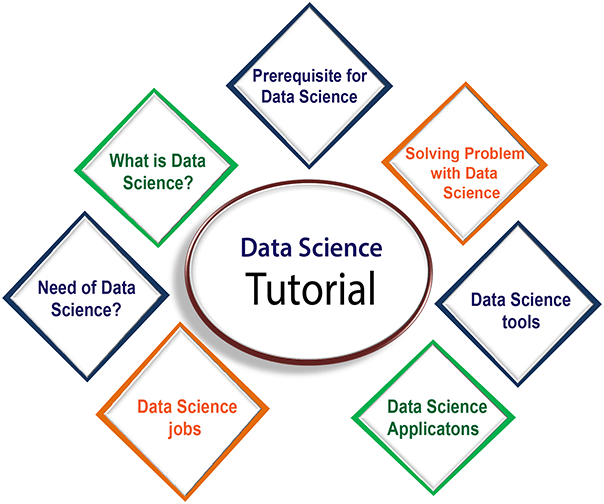

SVREC Technologies
SVREC TechnologiesData-Science
Data Science has become the most demanding job of the 21st century. Every organization is looking for candidates with knowledge of data science. In this tutorial, we are giving an introduction to data science, with data science Job roles, tools for data science, components of data science, application, etc.
So let's start,
What is Data Science?
Data science is a deep study of the massive amount of data, which involves extracting meaningful insights from raw, structured, and unstructured data that is processed using the scientific method, different technologies, and algorithms.
It is a multidisciplinary field that uses tools and techniques to manipulate the data so that you can find something new and meaningful.
Data science uses the most powerful hardware, programming systems, and most efficient algorithms to solve the data related problems. It is the future of artificial intelligence.
In short, we can say that data science is all about:
Asking the correct questions and analyzing the raw data.
Modeling the data using various complex and efficient algorithms.
Visualizing the data to get a better perspective.
Understanding the data to make better decisions and finding the final result.

Example:
Let suppose we want to travel from station A to station B by car. Now, we need to take some decisions such as which route will be the best route to reach faster at the location, in which route there will be no traffic jam, and which will be cost-effective. All these decision factors will act as input data, and we will get an appropriate answer from these decisions, so this analysis of data is called the data analysis, which is a part of data science.
Need for Data Science:

Some years ago, data was less and mostly available in a structured form, which could be easily stored in excel sheets, and processed using BI tools.
But in today's world, data is becoming so vast, i.e., approximately 2.5 quintals bytes of data is generating on every day, which led to data explosion. It is estimated as per researches, that by 2020, 1.7 MB of data will be created at every single second, by a single person on earth. Every Company requires data to work, grow, and improve their businesses.
Now, handling of such huge amount of data is a challenging task for every organization. So to handle, process, and analysis of this, we required some complex, powerful, and efficient algorithms and technology, and that technology came into existence as data Science. Following are some main reasons for using data science technology:
* With the help of data science technology, we can convert the massive amount of raw and unstructured data into meaningful insights.
* Data science technology is opting by various companies, whether it is a big brand or a startup. Google, Amazon, Netflix, etc, which handle the huge amount of data, are using data science algorithms for better customer experience.
* Data science is working for automating transportation such as creating a self-driving car, which is the future of transportation.
* Data science can help in different predictions such as various survey, elections, flight ticket confirmation, etc.
Data Science Jobs
As per various surveys, data scientist job is becoming the most demanding Job of the 21st century due to increasing demands for data science. Some people also called it "the hottest job title of the 21st century". Data scientists are the experts who can use various statistical tools and machine learning algorithms to understand and analyze the data.
The average salary range for data scientist will be approximately $95,000 to $ 165,000 per annum, and as per different researches, about 11.5 millions of job will be created by the year 2026.
Types of Data science Jobs:
If you learn data science, then you get the opportunity to find the various exciting job roles in this domain. The main job roles are given below:
1. Data Scientist
2. Data Analyst
3. Machine learning expert
4. Data engineer
5. Data Architect
6. Data Administrator
7. Business Analyst
8. Business Intelligence Manager
Data Science Components:
1. Statistics:
Statistics is one of the most important components of data science. Statistics is a way to collect and analyze the numerical data in a large amount and finding meaningful insights from it.
2. Domain Expertise:
In data science, domain expertise binds data science together. Domain expertise means specialized knowledge or skills of a particular area. In data science, there are various areas for which we need domain experts.
3. Data engineering:
Data engineering is a part of data science, which involves acquiring, storing, retrieving, and transforming the data. Data engineering also includes metadata (data about data) to the data.
4. Visualization:
Data visualization is meant by representing data in a visual context so that people can easily understand the significance of data. Data visualization makes it easy to access the huge amount of data in visuals.
5. Advanced computing:
Heavy lifting of data science is advanced computing. Advanced computing involves designing, writing, debugging, and maintaining the source code of computer programs.
Applications of Data Science:
Image recognition and speech recognition:
Data science is currently using for Image and speech recognition. When you upload an image on Facebook and start getting the suggestion to tag to your friends. This automatic tagging suggestion uses image recognition algorithm, which is part of data science.
When you say something using, "Ok Google, Siri, Cortana", etc., and these devices respond as per voice control, so this is possible with speech recognition algorithm.
Gaming world:
In the gaming world, the use of Machine learning algorithms is increasing day by day. EA Sports, Sony, Nintendo, are widely using data science for enhancing user experience.
Internet search:
When we want to search for something on the internet, then we use different types of search engines such as Google, Yahoo, Bing, Ask, etc. All these search engines use the data science technology to make the search experience better, and you can get a search result with a fraction of seconds.
Transport:
Transport industries also using data science technology to create self-driving cars. With self-driving cars, it will be easy to reduce the number of road accidents.
Risk detection:
Finance industries always had an issue of fraud and risk of losses, but with the help of data science, this can be rescued.
Most of the finance companies are looking for the data scientist to avoid risk and any type of losses with an increase in customer satisfaction.